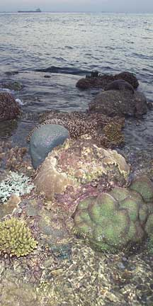
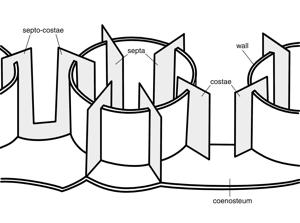

|
|
| hard corals text index | photo index |
| Phylum Cnidaria > Class Anthozoa > Subclass Zoantharia/Hexacorallia > Order Sclerectinia |
| Hard
corals: some common shapes & textures Order Scleractinia updated Nov 11 Identifying coral species is tricky and requires experience and expertise. Many different aspects of the coral are considered in working towards an identity. These include the overall colony shape, the shape and arrangement of the corallite, the structure of the corallite (scroll to bottom of this page for more), especially the small structures (which often require microscopic examination of a dead specimen - it's hard to see these structures in a live coral as the tissue covers them), in some the shape of the polyp too. The geographical location and depth at which the coral was found also helps. It is very difficult to accurately identify corals to species from just a photograph. Can we tell the species of corals from their overall shapes? The overall shape of a colony can be affected by the stresses it faces, e.g., waves, damage, disease. Thus, the same species of hard coral may take on different shapes depending on where the colony grows, e.g., shallow water, deeper water, exposed to waves or sheltered waters. There are also geographical variations. Also, a single colony of hard coral may have a combination of shapes. Some, for example, may form an encrusting layer with some portions of the colony rising up in columns or branches. Some common shapes of hard coral colonies include the following described below: |
 Corals can take on a wide variety of shape.Raffles Lighthouse, Jul 06 |
|
Massive:
solid skeleton and similar in shape in all directions, i.e.,
usually shaped like a boulder which may be dome-shaped, spherical
or hemi-spherical. Such shapes are usually found in shallow and
mid-depth water and are resistant to, but don't depend on, high
water flows. Such colonies grow slowly (1-3cm a year) and generally
live for a long time.
Not all boulder-shaped
colonies are solid. Some are made up of branching corallites. The
hollow, branching insides of the colony may be hidden by fleshy tissues
or expanded tentacles. These colonies are more fragile than colonies
made of solid skeletons. |
||


|
Encrusting
or crustose: a layer stuck to a hard surface, often growing
to follow the contours of the surface. Many corals have an encrusting
base from which other growth forms emerge, e.g., columns or branches.
|

|
Branching
(arborsecent) : forming branches with regularly spaced side
branches so that the colony looks like a bush or a tree. Such colonies
grow in areas exposed to high wave action and surge. They usually
grow more quickly.
|
||


|
Some
branching colonies form a platform of tightly packed branches that
looks like a table.
|


|
Columns
(Columnar): forming thick unbranched columns usually from a
common solid base (i.e., thicker than branching corals, usually
with blunt tips as opposed to sharper tips of branching forms).
Such shapes are usually found in mid-depth water sheltered from
extreme water flow.
|

|
Plate-like
(Laminar): forming a thin horizontal plate, sometimes in tiers
or terraces of plates. Some may be folded into ruffles or have columns
or knobs arising from the plates.
|
|
Some
plate-like colonies can form a vase-like or cone shape. Such shapes
are usually found in sheltered, mid-water depths.
|

|
Foliage-like
(Folicaeous): forming thin plates that are often folded into
shapes that resemble leaves or petals of a rose, or a head of lettuce.
Such shapes are usually found in areas with turbulent water flow.
|


The surface patterns on hard corals are a result of the shape of the corallites and the way the corallites grow.
Some common surface patterns on hard coral colonies include:
|
Plocoid:
each corallite is distinct and has its own walls
|
||

|
Phaceloid:
each corallite is distinct and has its own walls. Each corallite
is long and tubular resulting in corallites that look like trumpets.
These long corallites may be arranged to result in a spherical-looking
colony, especially when the polyp tentacles are extended and obscure
the corallites.
|


|
Ceroid:
each corallite is distinct but the walls between neighbouring corallites
are fused into one.
|

|
Meandroid:
Corallites form long valleys and there are no distinct polyps walls
are shared.
|
|
Flabelloid:
Corallites from short valleys with separate walls.
|
|
Flabello-meandroid:
Corallites form long valleys with separate walls.
|
Other surface patterns on hard corals may result from patterns on the skeleton between the corallites (coenosteum). Other identification details include the shape of polyps and tissues covering the skeleton.
*Species are difficult to positively identify without close examination.
On this website, they are grouped by external features for convenience of display.
|
Parts
of a corallite
 The septo-costae
are the radial elements of the corallite and are divided (by the
wall) into two components: the septa, which are inside the wall
and the costae, which are outside the wall. Where the wall is indistinct
(as in the Siderastreidae, Agariciidae and colonial fungiids) the
septo-costae are single uniform elements. In solitary fungiids the
wall is horizontally compressed, with the septa above it and the
costae below it. In most corals, the septa are of different lengths
and have a cyclical symmetry. They may be in cycles (usually with
6 septa in the 1st cycle, 6 in the 2nd cycle, 12 in the 3rd, 24
in the 4th and so-on if present) or orders (where there is an indeterminate
number of septa of each length). In practice, this cyclical arrangement
is often unclear. In many corals, but especially in Dendrophylliidae,
the cyclical arrangement of septa is embellished into a pattern
of fusion called pourtales plan, where septa or the 4th cycle curve
in front of those of the 3rd cycle and fuse. This appears to be
a primitive characteristic of the Scleractinia as it sporadically
occurs in several families and can also be seen in the earliest
fossils. The genus Porites has a unique septal plan which is used
extensively in taxonomy. |
|
References
|
|
|